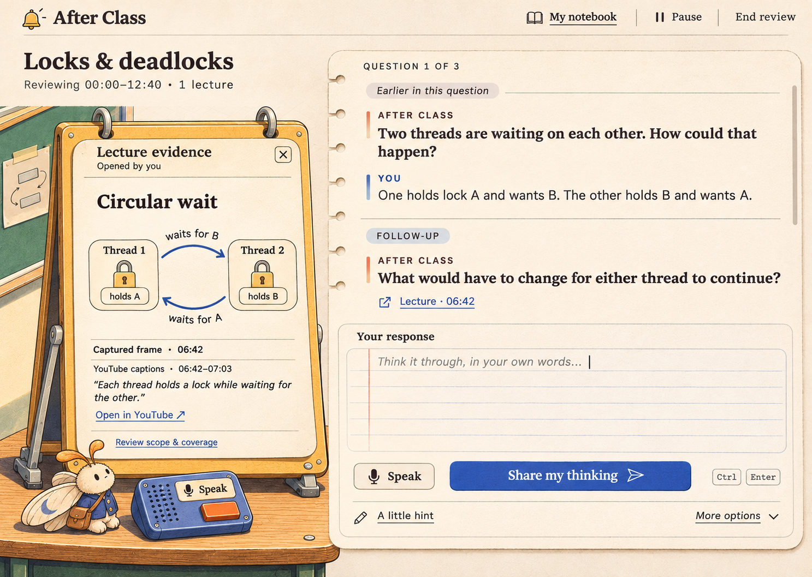
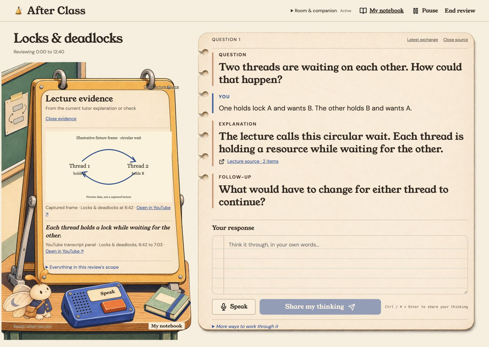

<!doctype html><html lang="en"><meta charset="utf-8"><title>After Class visual comparison</title><style>body{margin:0;background:#e9e2d3;font:16px system-ui;color:#2d261e}main{display:grid;grid-template-columns:1440px 1440px}h2{height:30px;box-sizing:border-box;font-size:16px;margin:0;padding:4px 16px}img{display:block;width:1440px;height:1024px;object-fit:fill}</style><main><section><h2>Approved PR #42 composition, normalized to 1440 × 1024</h2></section><section><h2>Browser implementation, 1440 × 1024, deterministic fixture</h2></section></main></html>
